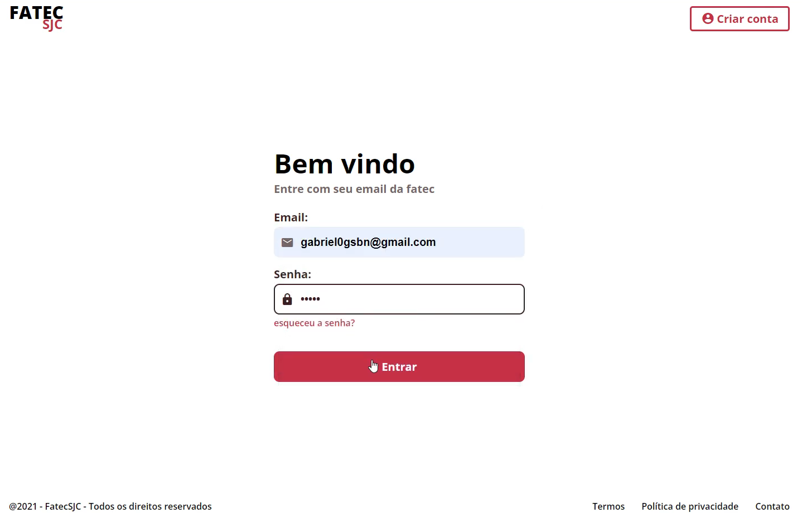

Experiência Profissional:
- Jovem Aprendiz de técnico em química pelo SESI – Jacareí e SENAI Luiz Simon, Entre os anos de 2019 e 2020.
- Desenvolvimento do projeto: “Comparação de métodos de extração do óleo vegetal a partir do abacate”. Desenvolvido na escola SENAI Luiz Simon em formato de TCC.
- Desenvolvimento do projeto API. Desenvolvido na Faculdade FATEC em formato de TCC fragmentado em várias entregas (Projeto incremental).
Trabalhos Desenvolvidos:
- TCC para curso tecnico de químico, com tema: “Comparação de métodos de extração do óleo vegetal a partir do abacate”
- TCC para conclusão do jovem aprendiz de técnico em quimica pelo SESI, com tema: “Aplicação de técnicas de investimento para formação do planejamento previdênciario individual”
- Cracha RocketSeat - evento NLW de Outubro 2021
- API para faculdade FATEC - desenvolvimento de um portal de informações para o Corpo Docente, Discente e Administrativo da Fatec SJC capaz de exibir e gerar de forma seletiva e controlada os avisos gerais ou específicos de cada usuário, respeitando as respectivas hierarquias dentro da universidade com o intuíto de melhorar a comunicação interna da instituição.
Trabalhos Futuros:
- Alguma aplicação voltada à biologia, seja monitoramento de especieis ou catalogação a partir de uma aplicação.
- Encremento e criação de sites e aplicações online para alguns conhecidos meus.
- Projeto envolvendo jogos, seja na criação ou emplementação de algo.